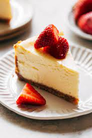

Cheesecake

Description
With a crumbly biscuit base, creamy, zesty topping, and plump, fresh fruit, this easy cheesecake recipe is sure to please
Ingredients
- 140g digestive biscuits
- 85g unsalted butter, melted
- 2 sheets gelatine
- 2 tbsp lemon juice
- 350g cream cheese
- 225g caster sugar
- 400g thick greek yogurt
- 1 tbsp vanilla extract
For the garnish
Steps
- Combine the fine biscuit crumbs with the melted butter until you have the consistency of wet sand. Use this mixture to line the base of an 8 inch springform cake tin. Transfer to the fridge to chill. Meanwhile, soften the gelatine in the lemon juice and a little water if necessary, for 5 minutes.
- Heat the mixture in a small saucepan over a low heat until the gelatine has dissolved. Beat together the cream cheese and the sugar in a large mixing bowl using an electric hand-held whisk for 2 minutes. Add the Greek yogurt and gelatin mixture, and mix again until smooth. Finally, add the vanilla extract and beat well. Pour onto the biscuit base and tap gently on the side to release any trapped air bubbles.
- Transfer to the fridge and chill for 2-3 hours until set. When ready to serve portions, remove from the springform tin and cut portions using a sharp, hot knife (run the blade under hot water then dry to heat it). Transfer to a serving plate and garnish with strawberries on top and to the side of the portion of cheesecake.